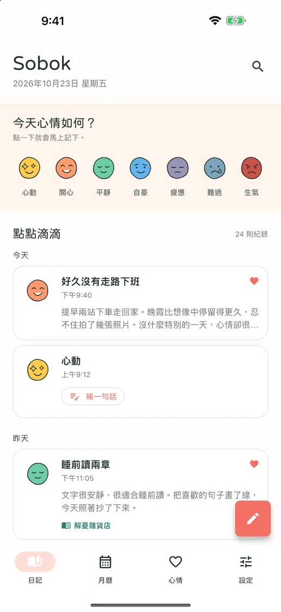
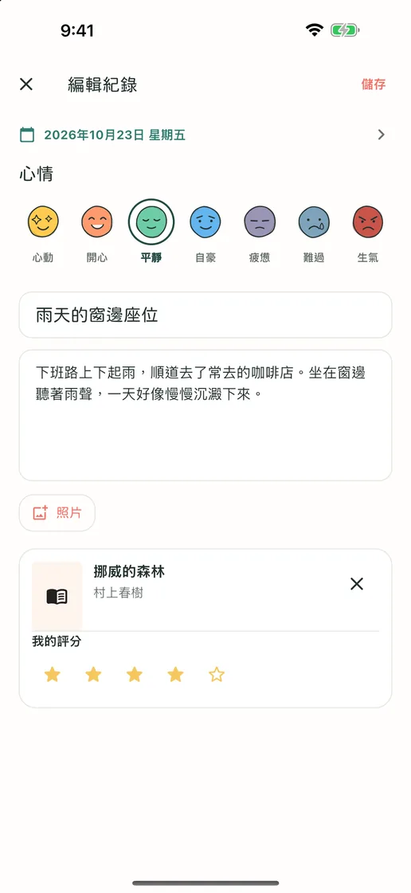
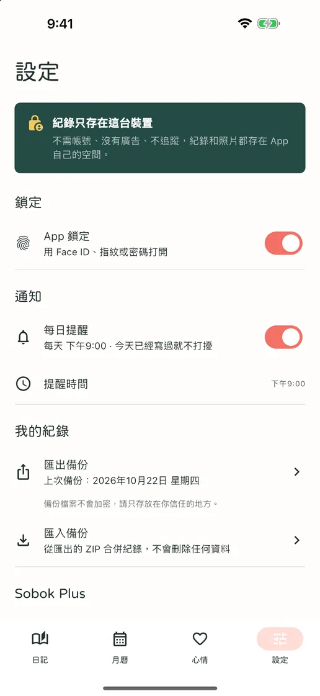
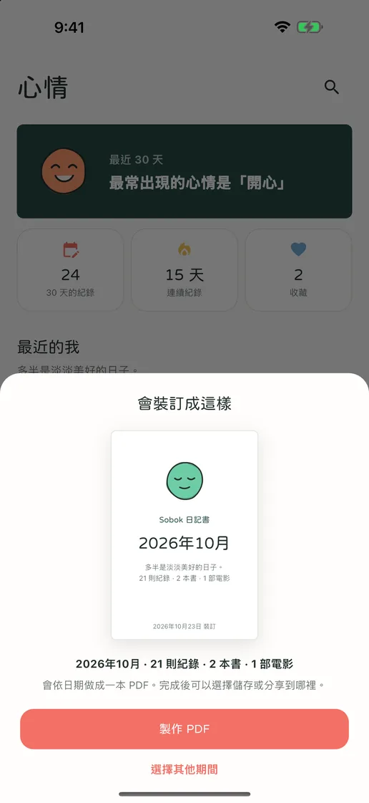
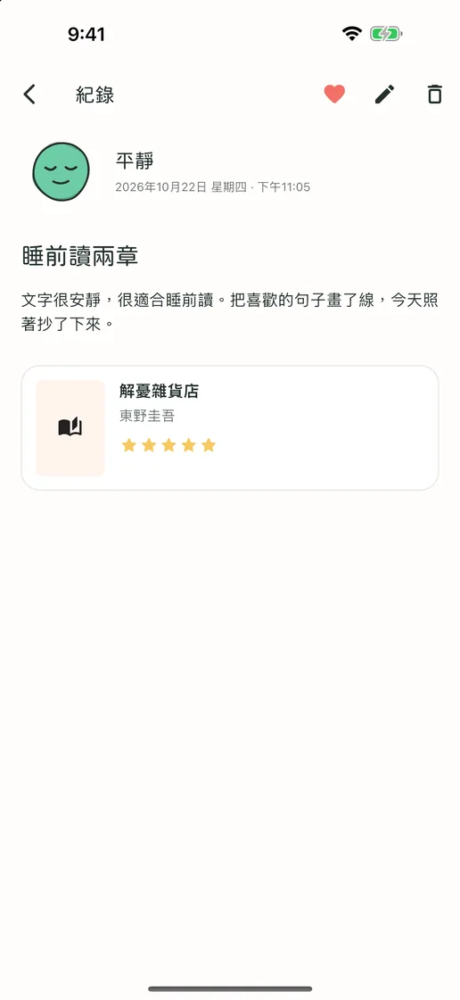
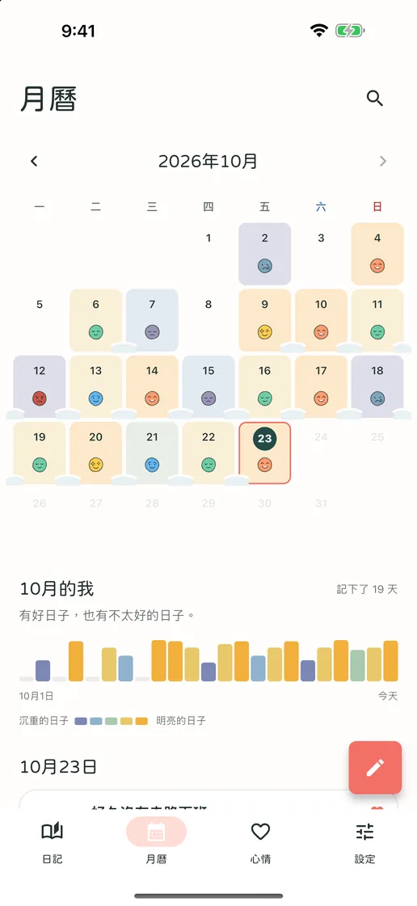
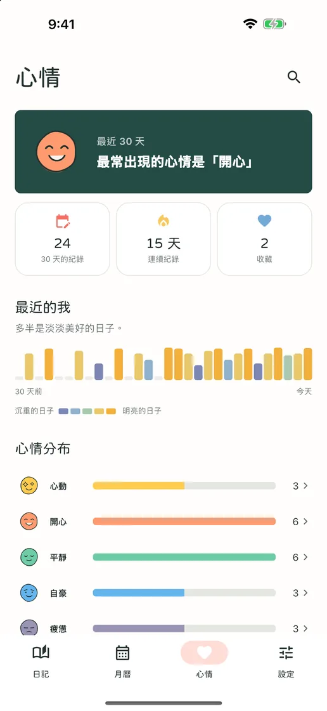

今天的心情，點一下就好
從七種心情表情中點一個，就成為今天的紀錄。有話想說時，可以直接在那則紀錄補上一句。
從一個心情，到書和電影的心得
不需帳號、沒有訂閱，也沒有廣告。只要點一個心情，今天就會留下來；長篇文字、照片，連書和電影的心得都能收進同一則紀錄。全部只存在你的手機裡，隨時都能匯出成檔案。
即將在 App Store 與 Google Play 推出免費 · App 內購買 · iPhone 與 Android · English · Deutsch · Tiếng Việt · Español · Bahasa Indonesia · 日本語 · 简体中文 · 繁體中文 · ไทย · Português · Français · 한국어


想寫多少就寫多少
沒什麼想寫的日子，只要點一個心情，今天就會留下來；想寫的日子，標題、長篇文字、照片，連書和電影的心得都能收進同一則紀錄。
從七種心情表情中點一個，就成為今天的紀錄。有話想說時，可以直接在那則紀錄補上一句。
標題、長篇文字、照片和評分，當天想留下多少就留多少。搜尋剛讀完的書、剛看完的電影附在紀錄裡，搜尋不到也能手動輸入。
每記錄一天，當天的心情就會堆積在月曆上，連續記錄的日子會像雪一樣連在一起。哪幾週過得好、哪幾週比較辛苦，一眼就看得出來。
App 畫面
「소복소복（Sobok Sobok）」是韓文裡形容雪輕輕堆積的聲音。你的每一天，也會在這裡一點一點累積。





不用註冊，沒有廣告，也沒有追蹤。日記只存在裝置裡，所有紀錄和照片都能匯出成 ZIP 檔，在新裝置上匯入。紀錄、搜尋、月曆、鎖定、備份全部免費，只有把紀錄裝訂成 PDF 日記書的 Sobok Plus 是一次買斷。